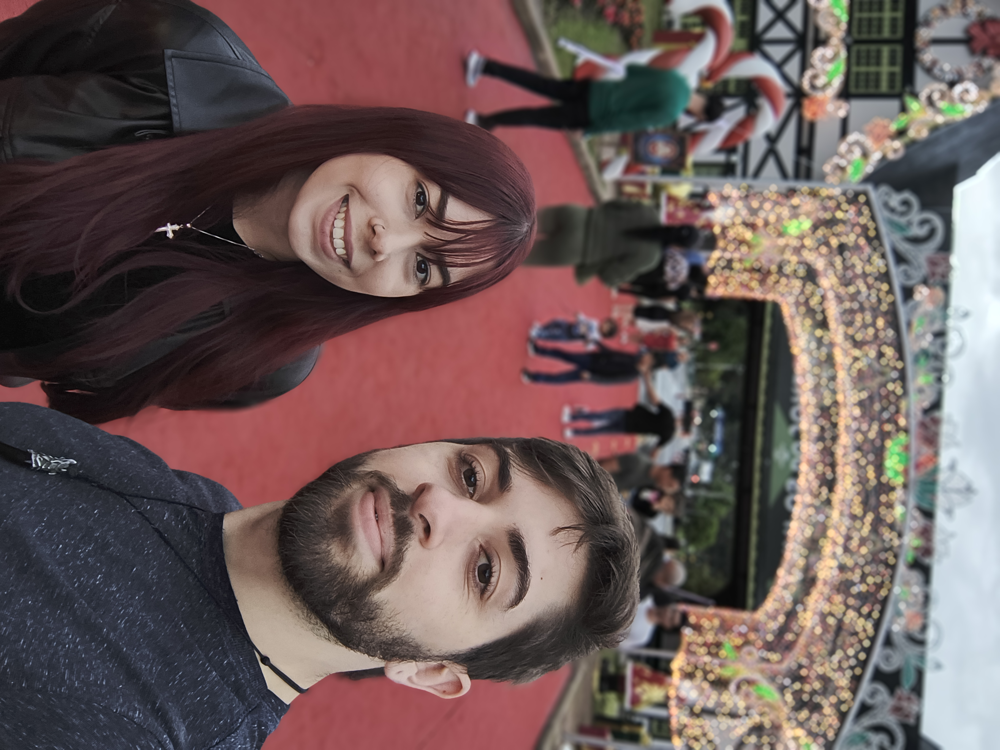
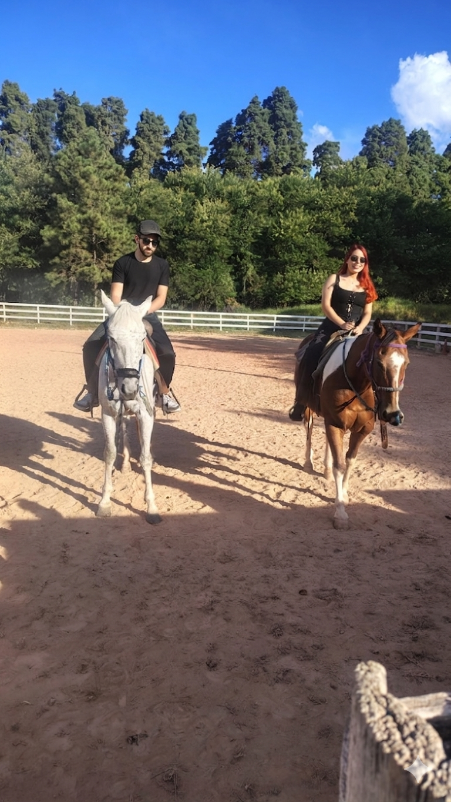

Novas Memórias & Conquistas
Virada de Ano em Campos do Jordão
Começamos 2026 juntos na serra, renovando nossas energias para tudo o que viria pela frente.



Nossas Viagens e Destinos
Pegar a estrada com você é sempre a melhor escolha. Da praia à serra, colecionamos lugares e momentos inesquecíveis.



Nossos Shows e Rolês
Curtir a música ao vivo, cantar junto e aproveitar cada saída com a melhor companhia do mundo.


Gratidão por Viver ao Seu Lado
Sou grato por cada detalhe da nossa rotina, pelo seu apoio, pelo seu sorriso e pela paz de dividir a vida com você.


17/11/2026 — 2 Anos Juntos 💜
Dois anos de parceria, risadas, treinos e sonhos compartilhados. Que venham os próximos capítulos da nossa vida!